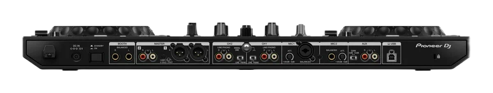
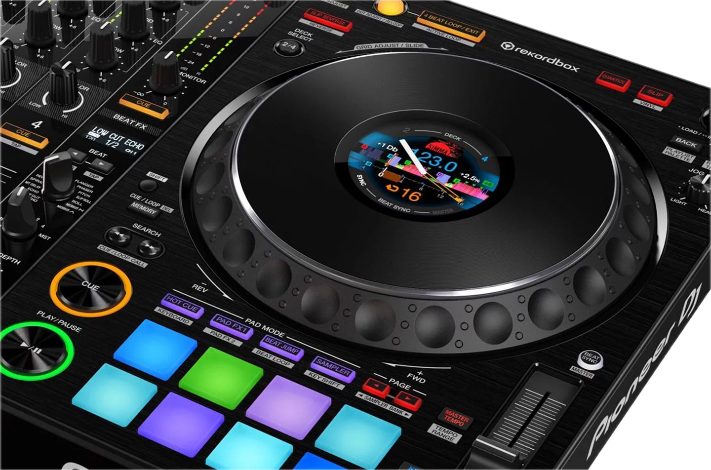

PIONEER
DDJ-1000
4-канальный контроллер. Механические джоги. Звук клубного уровня.
РЕЛИЗ PIONEER DDJ-1000-NEXT
Официальный анонс нового поколения
ПОЧЕМУ ЭТО МОЙ ВЫБОР
Механические джоги
Полноразмерные 206 мм диски с резистивным покрытием, как на CDJ-2000NXS2
4-канальный микс
Микшируйте до 4 треков с профессиональным 3-полосным эквалайзером
Студийное качество
24-битная звуковая карта для чистого сигнала в любой системе
Клубные эффекты
8 Beat FX от легендарного микшера DJM-900NXS2
RGB контроль
16 мультицветных пэдов для полного контроля треков
ТЕХНИЧЕСКИЕ ДАННЫЕ

ЛИЧНЫЙ ОПЫТ
"DDJ-1000 — это не просто контроллер. Это инструмент, который стирает грань между домашней студией и клубной сценой."
Идеальная платформа для практики и подготовки сетов. Компактный, но с полным функционалом клубного сетапа.
Балансные XLR выходы и надёжная металлическая конструкция делают его желанным гостем на любой площадке.
Встроенная звуковая карта обеспечивает идеальный сигнал для онлайн-трансляций. Отсутствие задержек и чистейший звук.
- Клубное качество сборки и компонентов
- Точнейшие механические джоги
- Профессиональные XLR выходы
- RGB пэды с отличной чувствительностью
- Полная интеграция с rekordbox
- Вес 6.1 кг — нужен прочный кейс
- Требователен к производительности ПК
- Отсутствие встроенного Wi-Fi
- Высокий ценовой сегмент

ОБУЧЕНИЕ И РЕСУРСЫ
Начните с освоения Beat FX и Keyboard Mode — это даст вам 80% возможностей контроллера уже в первую неделю использования.